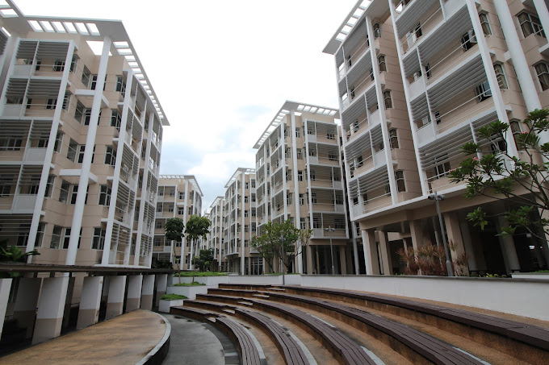

As the Temporary Estate Officer at Hwa Chong Institution Boarding School (HCIBS), in December 2022, I had the privilege of overseeing the smooth operation of estate projects and ensuring the maintenance of the boarding school facilities. My experiences there were nothing short of enriching.
One of my most significant responsibilities was supervising five enthusiastic interns from ITE College East. I was thrilled to mentor and train them, passing on my skills and knowledge so they could contribute positively to the workflow efficiency. Watching them grow and develop under my guidance was incredibly rewarding, and it made me realize the importance of sharing knowledge and skills to those new to the field of facilities management.

2 of the ITE Interns trained under my guidance
I was also responsible for conducting daily inspections of the boarding school rooms and facilities to ensure they were clean, safe, and up to the standards set by HCIBS. From checking for defects, maintenance issues, or safety hazards, I developed a keen eye for detail, understanding that even the smallest issue could cause significant problems in the future.

Conducting Room Cleanliness Inspections
Overseeing the completion of the estate projects and various quarterly maintencene checks was another experience that allowed me to develop my project management skills. It was my duty to check the progress and quality of the projects, ensuring the contractor met the requirements and standards set by the boarding school. The Estate projects were crucial for keeping up the boarding school's infrastructure, and making sure they were of high quality was important for giving students a comfortable place to live and learn. Through weekly checks and effective communication with contractors and other stakeholders, I learned how to manage projects and ensure they were completed on time which in turn, had a significant impact on the overall operations of the boarding school.

Checking the 5G Connectivity at the Rooftop
During the World Cup 2022 finals, I was in charge of setting up the Function Room and it was an exhilarating experience. I had to make sure that everything was set up perfectly, from the projectors, audio system, and laptops, to the comfortable sitting areas for the boarders within an hour There were bite-sized snacks and refreshments being catered hence, I was also in charge of making sure they were set-up in the Function room for the boarders to easily enjoy. After a good half an hour or more, the Function Room was transformed into a cozy and welcoming space, perfect for enjoying one of the most important games of the year. In the end, all my hard work paid off, and I was able to enjoy the fruit of my labor along with everyone else. It was a great experience, and I am grateful to have been a part of it.
<
Function Room Preparation for World Cup 2022
After completely fulfilling my duty as a Temporary Estate Officer in the month of December 2022, I am left with a profound sense of fulfillment. I was able to hone my leadership, communication, and attention to detail, all of which are essential skills in any field. But what truly made this experience special was the sense of responsibility I felt towards the safety and well-being of the students in the boarding school and one that I will always treasure and protect. Looking back, I am grateful for this opportunity, and I am excited to apply the skills I learned to my future endeavors, wherever they may take me.

Wai Yan Min Ko Ko
Hi there! I am a Computer Engineering student at Nanyang Technological University (NTU) and working part-time as Head of Office Staff Assistant Team @HCIBS. With a keen interest in Robotics, AI & IOT, I am constantly seeking new opportunities to expand my experience. If you have any internship opportunities or just want to connect, feel free to contact me!
More Experiences

Temporary Estate Boarding Assistant @ HCIBS
Supporting estate management and operations
Read More →
Head of Office Staff Assistant (OSA) Team @ HCIBS
Streamlining administrative services and student welfare
Read More →
Membership Secretary of Singapore Polytechnic International Students' Club (SPISC)
Leading ISC's administrative operations and communications
Read More →